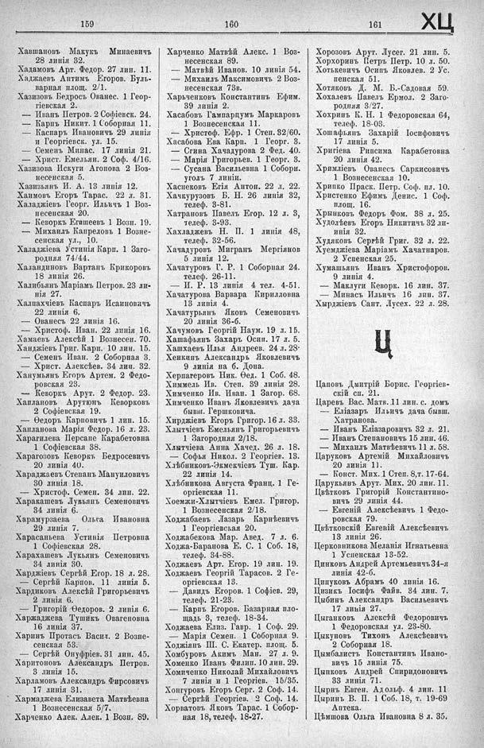

Лист источника 559
Скан

Распознанный текст
159
160
161
ХЦ
Хавшановъ Макукъ Минаевичъ
28 линія 32.
Хадамовъ Арт. Федор. 27 лин. 11.
Хаджаевъ Антимъ Егоров. Буль-
варная площ. 2/1.
Хазизовъ Бедросъ Ованес. 1 Геор-
гіевская 2.
— Иванъ Петров. 2 Софіевск. 24.
— Карпъ Никит. 1 Соборная 11.
— Каспаръ Ивановичъ 29 линія
и Георгіевск. ул. 15.
— Семенъ Минас. 17 линія 21.
— Христ. Емельян. 2 Соф. 4/16.
Хазизова Искуги Агопова 2 Воз-
несенская 5.
Хазизьянъ И. А. 13 линія 12.
Хаимовъ Егоръ Тарас. 22 л. 31.
Халаджіевъ Георг. Ильичъ 1 Воз-
несенская 20.
— Кеворкъ Егишеевъ 1 Возн. 19.
— Михаилъ Капреловъ 1 Возне-
сенская ул., 10.
Халаджіева Устинія Карп. 1 Заго-
родная 74/44.
Халандиновъ Вартанъ Крикоровъ
18 линія 26.
Халибьянъ Маріамъ Петров. 23 ли-
нія 27.
Халпахчіевъ Каспаръ Исаиновичъ
22 линія 6.
— Ованесъ 22 линія 16.
— Христоф. Иван. 22 линія 16.
Хамаевъ Алексѣй 1 Вознесен. 70.
Хандзіевъ Григ. Карп. 10 лин. 15.
— Семенъ Иван. 2 Соборная 3.
— Христ. Алексѣев. 34 лин. 32.
Ханумьянъ Егоръ Артем. 2 Федо-
ровская 23.
— Кеворкъ Арут. 2 Федор. 23.
Хаплановъ Арутюнъ Кеворковъ
2 Софіевская 19.
— Ѳеодоръ Карповичъ 1 лин. 15.
Хапланова Марія Федор. 16 л. 23.
Харагилева Персапе Карабетовна
1 Софіевская 38.
Харагозовъ Кеворкъ Бедросевичъ
20 линія 40.
Хараджаевъ Степанъ Мануиловичъ
30 линія 18.
— Христоф. Семен. 34 лин. 22.
Харакашевъ Лукьянъ Семеновичъ
34 линія 6.
Харамурзаева Ольга Ивановна
29 линія 7.
Харасаньева Устинія Петровна
1 Софіевская 28.
Харахашевъ Лукьянъ Семеновичъ
34 линія 30.
Харджіевъ Сергѣй Егор. 18 л. 28.
— Сергѣй Карпов. 11 линія 5.
Хардиковъ Алексѣй Григорьевичъ
2 линія 6.
— Григорій Ѳедоров. 2 линія 6.
Харджавева Тушикъ Овагеновна
16 линія 37.
Харинъ Протасъ Васил. 2 Возне-
сенская 53.
— Сергѣй Онуфріев. 31 лин. 45.
Харитоновъ Александръ Петров.
3 линія 15.
Харламовъ Александръ Фирсовичъ
17 линія 31.
Хармаджева Елизавета Матвѣевна
1 Вознесенская 5/7.
Харченко Алек. Алек. 1 Возн. 89.
Харченко Матвѣй Алекс. 1 Воз-
несенская 89.
— Матвѣй Иванов. 10 линія 54.
— Михаилъ Максимовичъ 2 Воз-
несенская 73в.
Харьченковъ Константинъ Ефим.
39 линія 2.
Хасабовъ Гампарцумъ Маркаровъ
1 Вознесенская 11.
— Христоф. Ефр. 1 Степ. 32/60.
Хасабова Ева Карп. 1 Георг. 3.
— Сгина Хачадурова 2 Фед. 40.
— Марія Григорьев. 1 Георг. 3.
— Сусана Васильевна 1 Соборн.
уголъ 7 линіи.
Хаспековъ Егія Антон. 22 л. 22.
Хачкурузовъ Б. Н. 26 линія 32,
телеф. 3-81.
Хатрановъ Павелъ Егор. 12 л. 3,
телеф. 3-93.
Хахладжевъ Н. П. 1 линія 48,
телеф. 32-56.
Хачадуровъ Мигранъ Мергіянов
5 линія 12.
Хачатуровъ Г. Р. 1 Соборная 24.
телеф. 26-11.
— И. Р. 13 линія 4 тел. 4-51.
Хачатурова Варвара Кирилловна
13 линія 4.
Хачатурьянъ Яковъ Семеновичъ
20 линія 36-б.
Хачумовъ Георгій Наум. 19 л. 15.
Хашафьянъ Захаръ Осип. 17 л. 5.
Хашхаевъ Илья Андреев. 24 л. 28.
Хенкинъ Александръ Яковлевичъ
9 линія на б. Дона.
Херпагеровъ Ник. Ѳед. 1 Соб. 48.
Химмель Ив. Степ. 39 линія 28.
Химченко Ив. Иван. 1 Загор. 68.
Химченко Иванъ Яковлевичъ дача
бывш. Гершковича.
Хирджіевъ Егоръ Григор. 16 л. 33.
Хлытчіевъ Емельянъ Григорьевичъ
1 Загородная 2/18.
Хлытчіева Анна Хачед. 26 л. 18.
— Софья Никол. 2 Георгіев. 13.
Хлѣбниковъ-Экмекчіевъ Туш. Кар.
22 линія 14.
Хлѣбникова Августа Франц. 1 Ге-
оргіевская 11.
Хоемжи-Хлытчіевъ Емел. Григор.
1 Вознесенская 2/18.
Ходжабаевъ Лазарь Карнѣевичъ
1 Георгіевская 20.
Ходжабекова Мар. Авед. 7 л. 6.
Ходжа-Баранова Е. С. 1 Соб. 18,
телеф. 34-88.
Ходжаевъ Арт. Егор. 19 лин. 19.
Ходжаевъ Георгій Тарасов. 2 Ге-
оргіевская 13.
— Давидъ Егоров. 1 Софіев. 29,
телеф. 21-23.
— Карпъ Егоров. Базарная пло-
щадь 3, телеф. 18-34.
Ходжаева Елиз. Гавр. 1 Соф. 29.
— Марія Семен. 1 Соборная 9.
Ходжіянъ Ш. С. Екатер. площ. 5.
Хомбуровъ Акимъ Ман. 27 л. 9.
Хоменко Иванъ Филип. 10 лин. 29.
Хомиченко Николай Михайловичъ
7 линія и 1 Георгіев. 15/35.
Хонгуровъ Егоръ Серг. 2 Соф. 14.
— Сергѣй Георгіев. 2 Соф. 14.
Хорватовъ Яковъ Тарас. 1 Собор-
ная 18, телеф. 18-27.
Хорозовъ Арут. Лусег. 21 лин. 5.
Хорхоринъ Петръ Петр. 10 л. 50.
Хотькевичъ Осипъ Яковлев. 2 Ус-
пенская 51.
Хотяковъ Д. М. Б.-Садовая 59.
Хохалевъ Павелъ Ермол. 2 Заго-
родная 3/27.
Хохринъ К. Н. 1 Федоровская 64,
телеф. 18-03.
Хошафьянъ Захарій Іосифовичъ
17 линія 5.
Хригіева Рипсима Карабетовна
20 линія 42.
Хримліевъ Ованесъ Саркисовичъ
1 Вознесенская 10.
Хрипко Праск. Петр. Соф. пл. 10.
Христенко Ефимъ Денис. 1 Соф.
площ. 16.
Хрынковъ Федоръ Фом. 38 л. 25.
Худолѣевъ Егоръ Никитичъ 32 ли-
инія 32.
Худяковъ Сергѣй Григ. 32 л. 22.
Хуемджіева Маріамъ Хачатнаров.
2 Успенская 25.
Хумашьянъ Иванъ Христофоров.
9 линія 4.
— Маклуги Кеворк. 16 лин. 37.
— Минасъ Ильичъ 16 лин. 37.
Хырджіевъ Сант. Лусех. 22 л. 28.
Ц
Цаповъ Дмитрій Борис. Георгіев-
скій сп. 21.
Царевъ Вас. Матв. 11 лин. с. домъ
— Еліазаръ Ильичъ дача бывш.
Хатранова.
— Иванъ Еліазаровичъ 32 л. 21.
— Иванъ Степановичъ 15 лин. 46.
— Михаилъ Матвѣевичъ 11 л. 58.
Царуковъ Артемій Михайловичъ
20 линія 11.
— Конст. Мих. 1 Степ. 8, т. 17-64.
Царукьянъ Арут. Мих. 20 лин. 11.
Цвѣтковъ Григорій Константино-
вичъ 29 линія 44.
— Евгеній Алексѣевичъ 1 Федо-
ровская 79.
Цвѣтковскій Евгеній Алексѣевичъ
13 линія 26.
Церковникова Меланія Игнатьевна
1 Успенская 13-52.
Цинковъ Андрей Артемьевичъ 34-я
линія 42-б.
Ципуковъ Абрамъ 40 линія 16.
Цизикъ Іосифъ Файв. 34 лин. 7.
Цибинъ Александръ Васильевичъ
17 линія 27.
Цыганковъ Алексѣй Федоровичъ
1 Федоровская ул. 23-80.
Цыкуновъ Тихонъ Алексѣевичъ
2 Соборная 18.
Цымбалистъ Константинъ Ивано-
вичъ 15 линія 75.
Цынковъ Андрей Спиридоновичъ
33 линія 71.
Цырнъ Евген. Адольф. 4 лин. 11
Цыринъ В. П. 1 Соб. 18, т. 19-69
Аптека.
Цѣмшова Ольга Ивановна 8 л. 35.